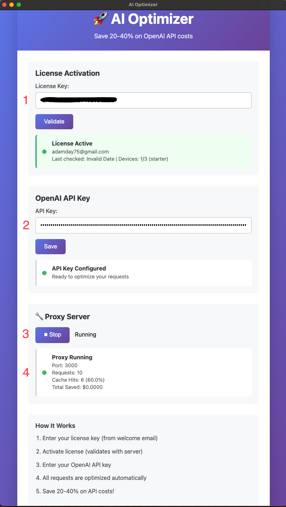

Keep your stack
Point existing OpenAI or Anthropic workflows at a local proxy instead of rebuilding the whole integration path.
The strongest story is still the practical one: repeated API work is expensive, and most teams want a way to control it without rewriting the workflow around a new product.
Point existing OpenAI or Anthropic workflows at a local proxy instead of rebuilding the whole integration path.
Cache duplicate and recurring requests so repeat traffic stops hitting the API at full cost.
Track requests, cache hits, and usage patterns in one place instead of guessing where the waste lives.
Keep the architecture story short and adoption-focused.
Point your workflow at AI Optimizer on localhost.
Repeated work can resolve without paying full price every time.
See requests, cache hits, and provider usage in one local control layer.
AI Optimizer earns trust with clear setup, visible cache behavior, and a workflow that fits into the tools you already use.

Teams move faster when the product fits into existing operations instead of demanding a big rebuild.
Keep cost visibility close to the workflow rather than waiting for a billing surprise.
Requests, cache hits, and compatibility proof are stronger than inflated marketing claims.
Keep the homepage fast, and let deeper pages support technical buyers, search, and implementation detail.
Install AI Optimizer, connect your workflow, and start reducing wasted OpenAI and Anthropic spend without changing how your team already works.